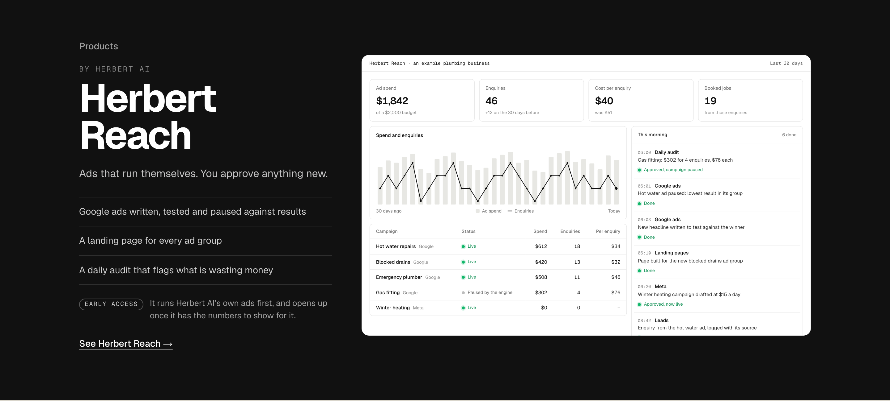
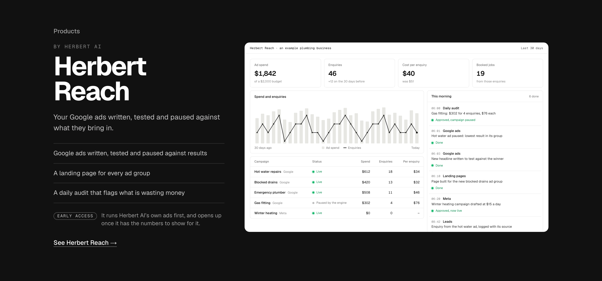

Products: the line under the name three ways
Detail 1 of 5 for the Products band (then the facts, the early-access note, the close, the phone layout). The band as built at 1440; only the line under “Herbert Reach” changes. The dashboard’s bar now says Herbert Reach, not Marketing engine.
Today“Ads that run themselves against real results: written, tested and paused by the system, with anything new held for you to approve.”The engine page’s sentence. Accurate, but three lines under a 64px name, and the facts below repeat half of it.

1. Runs itself“Ads that run themselves. You approve anything new.”Two short sentences: what it does and the rule that keeps the owner in charge. Ties to the site’s “Built to run itself” and to the AI Employees heading’s rhythm; the facts below carry the detail. Recommended.

2. What it does, plainly“Your Google ads written, tested and paused against what they bring in.”One plain sentence of the job, no approval line (the early-access note and the facts carry the rest). Concrete; less of a line, more of a description.

3. The story“The ad engine Herbert AI runs its own marketing on.”Leads with the dogfood: Herbert AI uses it first. Honest and different from any ad tool’s pitch, but it says who uses it before what it does.